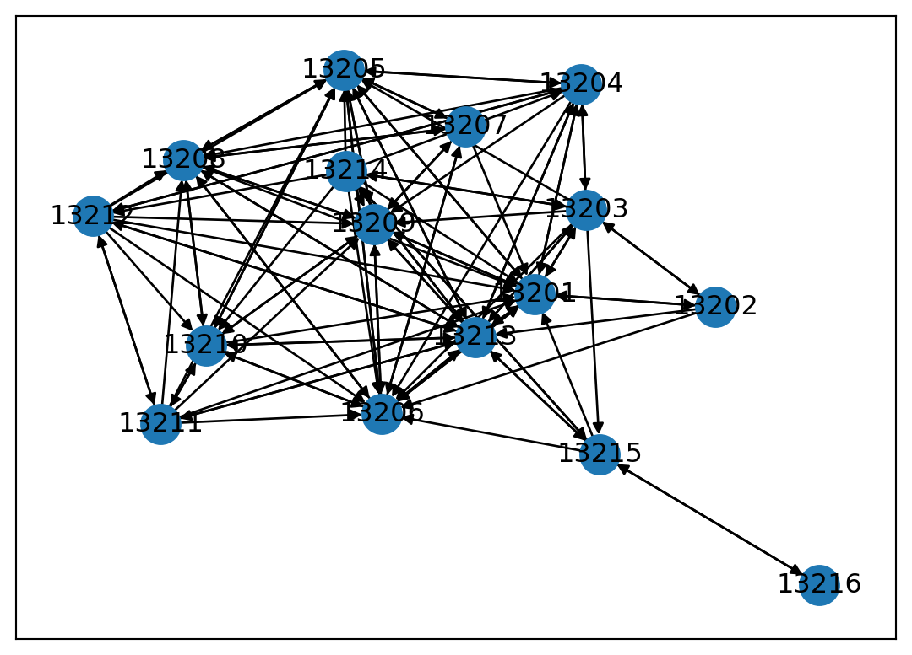
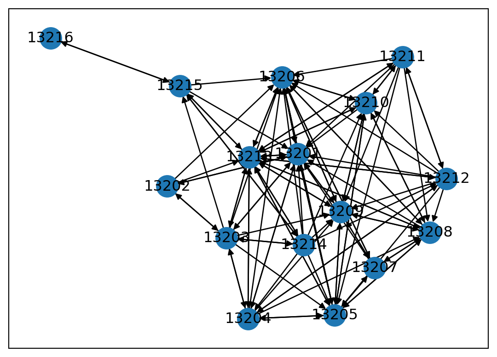
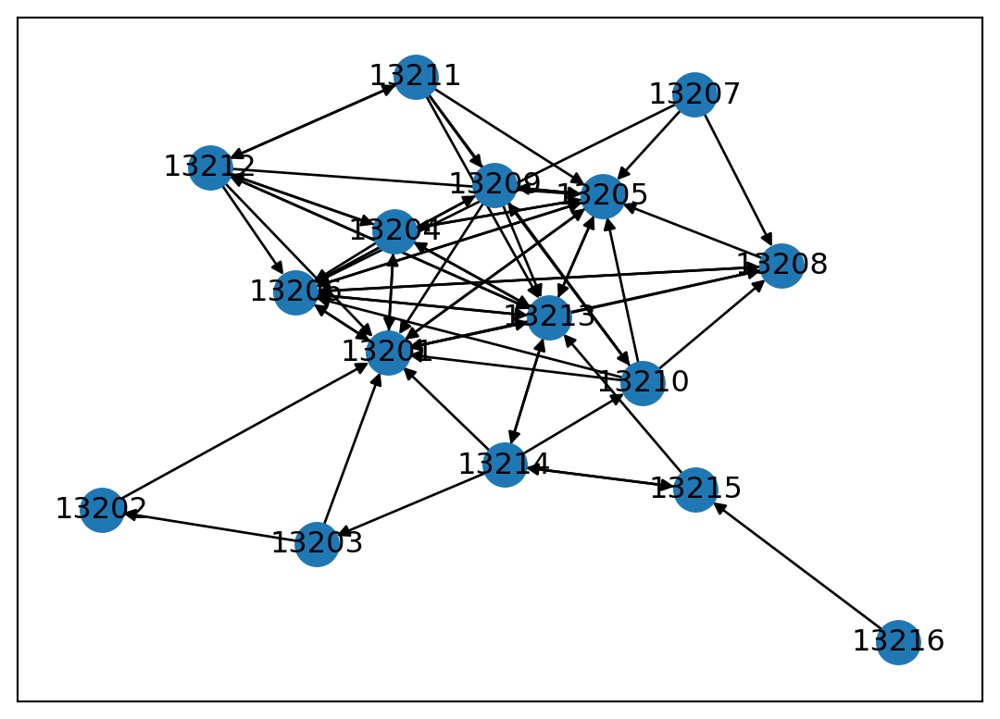

La visualisation montre un réseau non connexe. Le morceau de code qui suit décrit les différentes composantes du réseau et extrait la principale composante connexe. Le réseau étant orienté, on cherche une connexité faible (weakly_connected_components) ; si le réseau était non orienté, on utiliserait la fonction connected_components.
La logique est souvent similaire : on crée une liste correspondant au résultat ordonné d’une mesure puis on sélectionne des éléments de cette liste. Le numéro 0 entre crochets correspond au premier élément (Python numérote les éléments de 0 à n - 1 et non de 1 à n).
# liste ordonnée des composantes connexesCC =sorted(nx.weakly_connected_components(G), key=len, # clé de tri - len = longueur reverse=True) # ordre décroissantprint("Nombre de composantes", len(CC))# nombre de sommets par composantesprint("Nombre de sommets par composantes", [len(c) for c insorted(nx.weakly_connected_components(G), key=len, reverse=True)])# sélection de la composante connexe principaleGD = G.subgraph(CC[0])
Nombre de composantes 4
Nombre de sommets par composantes [106, 3, 3, 2]
Une version non orientée est créée car certaines mesures imposent un réseau de ce type. La valuation des liens est conservée dans la version non orientée : par défaut, elle ne correspond pas à la somme des intensités entrantes et sortantes. Ici, l’intensité du lien ij dans la version non orientée correspond à l’intensité du lien ij dans la version orientée.
# création d'une version non orientéeGU = nx.to_undirected(GD)nx.is_weighted(GU) #Trueprint("lien ij :", GD["13001"]["13201"]['weight'])print("lien ji :", GD["13201"]["13001"]['weight'])print("lien ij non orienté : ", GU["13001"]["13201"]['weight'])
lien ij : 135
lien ji : 499
lien ij non orienté : 135
Obtenir une valuation des liens dans le réseau non orienté correspondant à la somme des intensités ij + ji nécessite quelques étapes supplémentaires détaillées dans les lignes ci-dessous.
# créer une copie sans aucun lienGU = nx.create_empty_copy(GD, with_data=True)GU = nx.to_undirected(GU)# éviter message "Frozen graph can't be modified"GU = nx.Graph(GU)# récupérer liens avec intensité nulleGU.add_edges_from(GD.edges(), weight=0)# pour chaque lien ij + jifor u, v, d in GD.edges(data=True): GU[u][v]['weight'] += d['weight']# contrôle#a attributs liens et sommetslist(list(GU.edges(data=True))[0][-1].keys())list(list(GU.nodes(data=True))[0][-1].keys())# propriétés du réseaunx.is_directed(GU)nx.is_connected(GU)print("lien ij :", GD["13001"]["13201"]['weight'])print("lien ji :", GD["13201"]["13001"]['weight'])print("lien ij non orienté : ", GU["13001"]["13201"]['weight'])
lien ij : 135
lien ji : 499
lien ij non orienté : 634
2.2 Filtrage
Les données sont importées, la plus grande composante connexe a été extraite dans deux versions, une orientée et une non orientée. On peut souhaiter faire des sélections autres, que ce soit sur les sommets ou sur les liens. Deux options sont possibles : supprimer liens ou sommets selon un critère donné (remove_edges_from(), remove_nodes_from) ; sélectionner liens ou sommets selon un critère donné (subgraph()).
Si je souhaite travailler uniquement sur le cas marseillais :
# filtrage des sommets (1)# sélection des sommets satisfaisant la conditionMars = [n for n, v in G.nodes(data=True) if v['MARS'] ==True] # création d'un sous-grapheGmars = G.subgraph(Mars)# visualisationnx.draw_networkx(Gmars, pos = nx.kamada_kawai_layout(Gmars), with_labels=True)

On obtient le même résultat avec l’opération consistant à supprimer les sommets des communes hors Marseille :
# filtrage des sommets (2)# sélection des sommets hors Marseillenonmars = [n for n,v in G.nodes(data=True) if v['MARS'] ==False] # copier le réseau de départGmars2 = G# supprimer les communes hors MarseilleGmars2.remove_nodes_from(nonmars)# visualisationnx.draw_networkx(Gmars2, pos = nx.kamada_kawai_layout(Gmars2), with_labels=True)

Si je souhaite travailler uniquement sur les flux les plus importants :
# filtrer les liens# paramètres statistiquesliens.describe()# fixer un seuil (ici la médiane)seuil =212# identifier les liens sous ce seuil, récupérer les identifiantslong_edges =list(filter(lambda e: e[2] < seuil, (e for e in G.edges.data('weight'))))le_ids =list(e[:2] for e in long_edges)# créer une copie du réseau de départGsup = G# supprimer les liens identifiésGsup.remove_edges_from(le_ids)# ordre, taille et visualisationprint("Nb de sommets : ", nx.number_of_nodes(Gsup))print("Nb de liens : ", nx.number_of_edges(Gsup))nx.draw_networkx(Gsup, pos = nx.kamada_kawai_layout(Gsup), with_labels=True)
Nb de sommets : 16
Nb de liens : 64

Le fait de ne conserver que les liens entraîne la suppression des sommets devenant isolés. Le nombre de liens a très logiquement été divisé par deux dans la mesure où le seuil choisi ici est la médiane.
Si dans un réseau donné, j’ai des sommets isolés que je souhaite éliminer, j’utilise la fonction remove_nodes_from.
Soit un réseau aléatoire de 20 sommets contenant des isolés.
# générer un réseau aléatoire avec 2 isolésrg = nx.gnp_random_graph(20, 0.05, seed =1)print("Nb de sommets (isolés compris) : ", nx.number_of_nodes(rg))# liste des sommets avec un degré nulisoles = [node for node,degree indict(rg.degree()).items() if degree <1]# suppression des sommets concernésrg.remove_nodes_from(isoles)print("Nb de sommets (isolés exclus) : ", nx.number_of_nodes(rg))
Nb de sommets (isolés compris) : 20
Nb de sommets (isolés exclus) : 18
2.3 Agrégation
Il peut être intéressant d’agréger différents sommets. La fonction contracted_nodes prend en argument le réseau étudié et les deux sommets à fusionner, l’option self_loops permet de contrôler la création d’une boucle et l’option copy permet de créer un nouveau réseau sans écraser le premier.
Si je veux fusionner deux arrondissements marseillais, j’utilise le script suivant. Les lignes suivantes permettent de lister les liens entrants et sortants du sommet résultat de la fusion et de vérifier la présence (ici souhaitée) de la boucle.
GA = nx.contracted_nodes(G, '13215', '13216', self_loops=True, copy=True)GA.in_edges('13215') # liste des liens entrantsGA.out_edges('13215') # liste des liens sortants